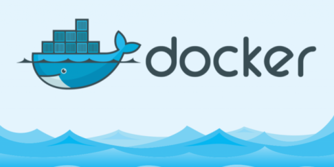

Présentation
Depuis que je suis jeune, j’ai toujours été curieux de comprendre comment fonctionne l’informatique. Qu’il s’agisse des logiciels, des réseaux, ou même des lignes de code qui structurent les sites web, j’ai rapidement développé une passion pour cet univers. C’est cette curiosité qui m’a conduit à m’orienter vers un BTS SIO (option SISR), afin d’approfondir mes connaissances et de transformer cette passion en compétence concrète.
En dehors de l’informatique, je suis un grand amateur de jeux vidéo. J’aime autant les expériences immersives que les jeux plus analytiques, et je prends plaisir à découvrir de nouveaux univers virtuels. La musique occupe aussi une place importante dans mon quotidien, que ce soit en l’écoutant ou en en créant moi-même. J’apprécie particulièrement les styles qui mélangent l’énergie du rap avec des touches funk ou électroniques.
Côté cinéma et séries, je suis un grand passionné. Parmi mes œuvres préférées, on retrouve Star Wars, Le Mentalist, Stranger Things, Jurassic World, Mission Impossible, ou encore Bullet Train. J’aime les histoires bien construites, les personnages marquants et les ambiances fortes.
J’ai aussi un amour profond pour les animaux, et surtout pour les chats. Ma chatte, Maguy, fait partie intégrante de ma vie et occupe une place spéciale dans mon quotidien.
Enfin, même si je n’ai pas encore eu l’occasion de voyager à l’étranger, c’est un rêve que je garde précieusement. J’aimerais découvrir de nombreux pays, avec une attirance particulière pour le Japon, un pays dont la culture me fascine autant que son esthétique.
Mes projets
Projet Python

Contexte :
La société fictive STESIO souhaite se conformer aux obligations légales relatives à l'utilisation d'Internet sur le lieu de travail. Pour ce faire, elle a mis en place un proxy permettant de journaliser tous les accès web effectués par ses salariés. Le fichier de log généré (log_proxy.txt) contient des informations telles que l’adresse IP, la date, l’heure, la commande HTTP (GET ou POST), ainsi que les URL des éléments consultés (pages, images, etc.).
À partir de ces journaux volumineux, le responsable du système d'information souhaite produire des statistiques telles que :
Les sites les plus consultés,
La liste des utilisateurs les plus consommateurs,
Et dans des cas spécifiques (ex. : enquête de police), pouvoir répondre à des requêtes précises du type : "Qui a consulté tel site, à telle date et telle heure ?"
Pour répondre à ces besoins, une base de données Oracle a été conçue avec les tables suivantes :
SALARIES(num, nom, prenom, adresseIP)
PROXY(id, adresseIP, jourheure, URL)
En parallèle, STESIO souhaite également automatiser la création des comptes utilisateurs du SGBD à partir d’un annuaire Windows. Un script Python est utilisé pour lire un fichier texte contenant la liste des utilisateurs, puis générer automatiquement les commandes SQL de création de comptes.
Compétences mobilisées :
- A1.1.1 – Analyse du cahier des charges d’un service à produire
- A1.2.2 – Rédaction des spécifications techniques de la solution
- A1.2.4 – Détermination des tests nécessaires à la validation d’un service
- A1.4.1 – Participation à un projet
- A1.4.2 – Évaluation des indicateurs de suivi et justification des écarts
- A4.1.3 – Conception ou adaptation d’une base de données
- A4.1.6 – Gestion des environnements de développement et de test
- A4.1.8 – Réalisation des tests nécessaires à la validation
- A4.1.10 – Rédaction d’une documentation d’utilisation
Projet GSB
Contexte :
Dans le cadre de la première année de BTS SIO SISR, un Projet Personnalisé Encadré (PPE) a été réalisé sur une période de 4 semaines, en avril 2017, par groupe de trois étudiants.
Le projet porte sur les besoins du laboratoire pharmaceutique fictif Galaxy Swiss Bourdin (GSB), qui souhaite centraliser la gestion des comptes-rendus de visite ainsi que les frais professionnels engagés par ses visiteurs médicaux. Pour cela, le laboratoire a décidé de développer en interne une application web sécurisée, intitulée GSB-AppliFrais, hébergée sur sa propre infrastructure réseau.
Cette application permettra à l’ensemble de la force commerciale (visiteurs médicaux) de saisir les comptes-rendus et frais liés à leurs déplacements (hébergement, restauration, transport…), mais également aux équipes comptables de valider et mettre en paiement ces frais via un module d’administration sécurisé.
Objectifs et contraintes techniques :
Interface sécurisée, hébergement en interne, segmentation réseau (DMZ/PROD), sécurisation SSL/TLS, accès différencié selon les profils (visiteur, comptable, développeur).
Développement et déploiement :
Installation manuelle d’Apache, PHP, MySQL, configuration réseau (DNS, FTP, HTTPS), tests et documentation.
Compétences mobilisées :
- A1.1.1 - Analyse du cahier des charges d’un service à produire
- A1.1.3 - Étude des exigences liées à la qualité attendue d’un service
- A1.2.4 - Détermination des tests nécessaires à la validation d’un service
- A1.3.1 - Test d’intégration et d’acceptation d’un service
- A1.3.3 - Accompagnement de la mise en place d’un nouveau service
- A1.3.4 - Déploiement d’un service
- A1.4.1 - Participation à un projet
- A4.1.1 - Proposition d’une solution applicative
- A4.1.8 - Réalisation des tests nécessaires à la validation d’éléments adaptés ou développés
Projet Docker

Contexte :
Dans ce projet réalisé en groupe de trois, nous avons conçu une infrastructure à haute disponibilité en utilisant Docker. L’objectif était de répartir la charge entre plusieurs serveurs web via un répartiteur de charge, puis d’y ajouter une couche de gestion de base de données avec MariaDB. Chaque composant de l’architecture (serveurs web, base de données, répartiteur) a été déployé dans un conteneur Docker indépendant. Une page PHP permettait d’afficher dynamiquement le nom de chaque serveur à l’aide de la fonction gethostname() pour vérifier la répartition. La base de données MariaDB contenait une table personne, consultable via une autre page PHP connectée à cette base. Toute l’infrastructure a été documentée et testée, notamment en cas de panne d’un des serveurs web.
Missions :
Installation Docker, configuration HAProxy, MariaDB, réseau personnalisé, pages PHP dynamiques, documentation complète.
Compétences mobilisées :
- A1.1.1 / C1.1.1.2 – Analyse des besoins
- A1.2.1 / C1.2.1.1 – Élaboration de solution technique
- A1.3.4 / C1.3.4.3 – Déploiement de service
- A1.4.1 / C1.4.1.2 – Suivi de projet
- A1.4.2 / C1.4.2.2 – Analyse des écarts
- A5.2.2 / C5.2.2.4 – Veille technologique